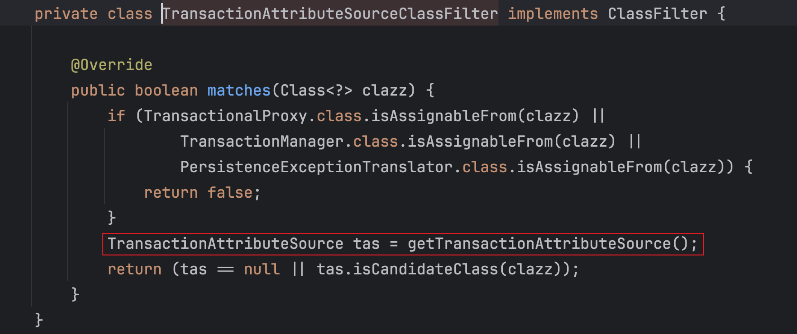

分析一下 SpringBoot 的 Aop 的解析和 @Transactional 注解解析原理
首先当我们在spring boot中要启用aop的时候需要添加下面的依赖：
<dependency>
<groupId>org.springframework.boot</groupId>
<artifactId>spring-boot-starter-aop</artifactId>
</dependency>
在spring boot的配置类中预置了aop的自动配置类：AopAutoConfiguration，自动配置类会检测类路径下是否有Advice类来决定是否开启动态代理。默认开启的是Cglib动态代理，并且已经声明了注解@EnableAspectJAutoProxy，因此我们在启动类上面无需再声明。
我们来看一下@EnableAspectJAutoProxy注解的定义：
@Import(AspectJAutoProxyRegistrar.class)
public @interface EnableAspectJAutoProxy {
}
可以看到该注解上面通过@Import的方式引入了AspectJAutoProxyRegistrar配置。在AspectJAutoProxyRegistrar配置中，会通过编程式的方式动态的将AnnotationAwareAspectJAutoProxyCreator类注入到spring容器中，注入的beanName为org.springframework.aop.config.internalAutoProxyCreator。如果使用的Cglib动态代理的话（也就是proxyTargetClass=true）,则会额外给beanDefinition添加proxyTargetClass属性为true。
AnnotationAwareAspectJAutoProxyCreator解析
根据上面的理解，我们开启aop之后会向spring容器中添加AnnotationAwareAspectJAutoProxyCreator实例，接下来我们先来看一下这个类的继承结构：

我们知道在spring程序启动完成之后，我们就能从spring容器中拿到对应的代理对象，根据我们之前手动使用jdk或者Cglib创建动态代理的流程，首先需要的是要创建一个被代理的对象，然后再使用动态代理技术进行封装。
按照这个理解在spring实例化bean的生命周期中，当创建完成bean对象并给bean设置完属性值之后我们就得到了一个被代理的对象，接着会执行一些生命周期方法：

结合前面AnnotationAwareAspectJAutoProxyCreator类的继承结构和生命周期方法的调用，我们发现AnnotationAwareAspectJAutoProxyCreator类也是一个BeanPostProcessor，经过调试之后，定位到他的postProcessAfterInitialization方法。
postProcessAfterInitialization
我们先来看方法的大致执行流程，如下图：

在方法执行的时候，会根据beanName检查earlyProxyReferences中是否存在代理的bean对象，如果不存在，则执行生成代理的流程。最后会将生成的代理对象进行缓存。
上图中的主要逻辑则集中在第4和6步中，即首先需要查找到当前的bean对象匹配到的是哪个切面然后才能通过动态代理将切面的逻辑进行织入。
查找匹配的切面
要查找当前的bean实例匹配哪个切面，首先需要获取程序中定义的所有的切面，然后再进行匹配。我们来看下面的执行流程：

在第4步中，只有当第一个bean实例化的时候会执行一次。通过获取到容器中所有的beanName，然后进行遍历，判断beanName对应的Class类对象上面是否有@Aspect注解，如果有@Aspect注解则将此类进行缓存，最终会的到我们定义的所有的@Advice类。
遍历获得到的切面对应的切点规则，与当前bean对象的每个方法进行匹配，看是否有匹配pointCut的方法，如果匹配到了方法，则说明需要使用这个切面进行织入，最终获得到所有应该织入当前bean对象的切面的集合。 在此我们可以了解到，当系统中定义了越多的切面，则程序启动会越慢，每多增加一个切面会多一次循环调用。
创建代理对象
针对于上面获得到的切面集合都需要将对应的逻辑织入到当前bean对象，接下来就是使用切面生成代理对象。
spring使用org.springframework.aop.framework.ProxyFactory代理工厂类来创建代理对象。默认实现是DefaultAopProxyFactory，通过代理工厂创建出代理JdkDynamicAopProxy或者ObjenesisCglibAopProxy。
收到请求后执行代理逻辑
在应用启动完成之后，自动注入的地方也使用代理对象进行了注入。我们使用JDK动态代理来分析，这也是默认的代理方式。
jdk动态代理生成的代理对象对应的代理类是JdkDynamicAopProxy，因此当调用方法的时候，首先会调用该类的invoke方法。在该方法中会遍历我们定义的每一个切面规则（Advisor=pointCut+Advice）；使用切点的classFilter来判断切面规则是否匹配当前类。如果匹配到当前类，则再进行方法的匹配。
上述匹配都测试通过之后，则表示当前切面规则应该被织入方法的执行流程中。此时会通过AdvisorAdapterRegistry进行适配，将当前遍历Advisor适配成方法拦截器MethodInterceptor。例如我们定义了一个前置通知@Before，对应的是MethodBeforeAdvice，则会适配成MethodBeforeAdviceInterceptor。当遍历Advisor完成之后，最终会生成一个MethodInterceptor的集合。
随后将方法拦截器通过ReflectiveMethodInvocation构造成责任链来调用。
public Object proceed() throws Throwable {
// We start with an index of -1 and increment early.
if (this.currentInterceptorIndex == this.interceptorsAndDynamicMethodMatchers.size() - 1) {
return invokeJoinpoint();
}
Object interceptorOrInterceptionAdvice =
this.interceptorsAndDynamicMethodMatchers.get(++this.currentInterceptorIndex);
if (interceptorOrInterceptionAdvice instanceof InterceptorAndDynamicMethodMatcher) {
// Evaluate dynamic method matcher here: static part will already have
// been evaluated and found to match.
InterceptorAndDynamicMethodMatcher dm =
(InterceptorAndDynamicMethodMatcher) interceptorOrInterceptionAdvice;
Class<?> targetClass = (this.targetClass != null ? this.targetClass : this.method.getDeclaringClass());
if (dm.methodMatcher.matches(this.method, targetClass, this.arguments)) {
return dm.interceptor.invoke(this);
}
else {
// Dynamic matching failed.
// Skip this interceptor and invoke the next in the chain.
return proceed();
}
}
else {
// It's an interceptor, so we just invoke it: The pointcut will have
// been evaluated statically before this object was constructed.
return ((MethodInterceptor) interceptorOrInterceptionAdvice).invoke(this);
}
}
在上面的代码中List集合interceptorsAndDynamicMethodMatchers中保存的就是切面对应的方法拦截器，每次执行proceed方法的时候，下标会+1从而获取下一个拦截器进行调用。我们看到在拦截器调用的时候，传递的参数是this。要想责任链执行下去，在方法拦截器中就需要调用MethodInvocation的proceed方法。
单机事务@Transactional注解
在spring中我们使用@Transactional注解可以很容易的让我们的bean中操作数据库的方法来开启事务操作。那它是怎么实现的呢？
@Transactional注解在spring-tx包下面，全路径是org.springframework.transaction.annotation.Transactional。我们来看spring boot中预置的事务自动配置类：TransactionAutoConfiguration和DataSourceTransactionManagerAutoConfiguration。DataSourceTransactionManagerAutoConfiguration配置类在TransactionAutoConfiguration之前完成自动配置，先完成事务管理器的自动配置，而在TransactionAutoConfiguration类中则会声明事务管理器代理的两种方式：jdk动态代理和cglib动态代理。默认使用cglib动态代理。

我们查看@EnableTransactionManagement注解，发现该注解通过import的方式导入了TransactionManagementConfigurationSelector配置。在配置类中会判断@EnableTransactionManagement注解的mode值，默认是PROXY，此时会向容器中加载AutoProxyRegistrar和ProxyTransactionManagementConfiguration两个配置。
我们重点来看ProxyTransactionManagementConfiguration配置类，在该类中主要声明的是
事务管理器的切面：BeanFactoryTransactionAttributeSourceAdvisor，该类继承自aop的拓展类AbstractBeanFactoryPointcutAdvisor，并提供了针对于事务的pointCut实现。
MethodInterceptor方法拦截器的实现：TransactionInterceptor，该类实现了MethodInterceptor方法拦截器
在上面查找匹配的切面的流程图中，在第2步会从spring容器中读取所有Advisor类型的bean。因此当定义了事务管理器的切面BeanFactoryTransactionAttributeSourceAdvisor之后，也是能够被读取到。最终和我们定义的@Aspect切面一样发挥作用。
我们知道Advisor是通知+切点的组合，判断Advisor是否要代理某个bean，需要经过两个步骤的判断：
1.满足Advisor中pointCut的classFliter过滤
在事务管理器的pointCut中对应的classFilter是TransactionAttributeSourceClassFilter，我们查看它的matchs方法：

在这里tas变量获取到的是AnnotationTransactionAttributeSource，在该类中会去遍历TransactionAnnotationParser集合与当前实例化的bean的class进行匹配，其中有一个TransactionAnnotationParser的实现类是SpringTransactionAnnotationParser。
2.满足Advisor中pointCut的MethodMatch的匹配
在ClassFilter过滤通过之后，会进一步通过MethodMatch来进行匹配。在MethodMatch中，会判断当前方法上面是否有@Transaction注解，如果没有的话会再次判断类上面是否有该注解。如果找到了@Transaction注解则匹配通过，表示当前bean需要被代理。
实战自定义AOP逻辑
在上面我们了解了aop的初始化逻辑和代理对象的执行逻辑之后，下面我们来自定义一个注解，完成类似于事务注解@Transactional的运行方式。
自定义的逻辑是：我们定义一个日志的aop，当执行的方法上有@LogToEs注解标注的时候，执行会被我们的aop拦截来完成日志的记录，可以使将日志信息输送到ES或者其他地方。
1.定义自动配置类，并@Import配置类
我们自定义一个自动配置注解@EnableLogManagement用来全局开启配置，然后定义一个@LogToEs注解。
@Target(ElementType.TYPE)
@Retention(RetentionPolicy.RUNTIME)
@Documented
@Import(LogManagementConfigurationSelector.class)
public @interface EnableLogManagement {
AdviceMode mode() default AdviceMode.PROXY;
}
@Target({ElementType.TYPE, ElementType.METHOD})
@Retention(RetentionPolicy.RUNTIME)
@Inherited
@Documented
public @interface LogToEs {
}
2.完成配置类LogManagementConfigurationSelector的逻辑
我们在自动配置注解上面通过@Import的方式导入了LogManagementConfigurationSelector配置类，在这个类中，我们会定义一个Advisor。 因为在程序启动的时候，aop会先加载程序中所有的Advisor的bean，在这里我们可以继承AbstractBeanFactoryPointcutAdvisor，来使我们的配置类是一个Advisor。
我们从上面的分析了解到Advisor是Advice和pointCut的组合，此时我们还需要定义一个pointCut和Advice。
3.定义切点和通知
在我们继承了AbstractBeanFactoryPointcutAdvisor类之后，需要重写getPointcut方法，也就是需要我们提供一个切点，我们的切入逻辑是判断方法上面有没有@LogToEs注解，因此在这里使用的是StaticMethodMatcherPointcut的实现：
@Override
public Pointcut getPointcut() {
// 只匹配方法的签名，而不关心方法在运行期的参数
return new StaticMethodMatcherPointcut() {
@Override
public boolean matches(Method method, Class<?> targetClass) {
return method.getAnnotation(LogToEs.class) != null;
}
};
}
随后我们定义一个通知Advice。在aop中，每一个通知最终都会被适配为方法拦截器。我们可以来看下前置通知：
public class MethodBeforeAdviceInterceptor implements MethodInterceptor, BeforeAdvice, Serializable {
private final MethodBeforeAdvice advice;
......
@Override
@Nullable
public Object invoke(MethodInvocation mi) throws Throwable {
this.advice.before(mi.getMethod(), mi.getArguments(), mi.getThis());
return mi.proceed();
}
}
可以看到在invoke的调用中，在执行实际方法之前调用了advice的before的方法执行前置的逻辑。 我们可以直接实现方法拦截器接口MethodInterceptor，在里面实现我们的逻辑即可：
public class LogInterceptor implements MethodInterceptor {
@Override
public Object invoke(MethodInvocation invocation) throws Throwable {
// 在这里添加日志记录逻辑
System.out.println("invocation.getArguments() = " + invocation.getArguments());
Object proceed = invocation.proceed();
return proceed;
}
}
这里只是将日志打印到了控制台中。在完成上面两个组件的定义之后，就可以创建我们的Advisor bean了：
@Configuration
@Role(BeanDefinition.ROLE_INFRASTRUCTURE)
public class LogManagementConfiguration extends AbstractLogManagement {
@Bean
@Role(BeanDefinition.ROLE_INFRASTRUCTURE)
public LogManagementAdvisor logManagementAdvisor(LogInterceptor logInterceptor) {
LogManagementAdvisor logManagementAdvisor = new LogManagementAdvisor();
logManagementAdvisor.setAdvice(logInterceptor);
return logManagementAdvisor;
}
@Bean
public LogInterceptor logInterceptor() {
return new LogInterceptor();
}
}
在创建Advisor的时候通过setAdvice方法，将我们的拦截器添加进去即可。
这里需要注意的是@Role(BeanDefinition.ROLE_INFRASTRUCTURE)注解，BeanDefinition.ROLE_INFRASTRUCTURE 的作用是标识Bean为Spring框架内部的基础设施组件，而非用户直接使用的业务Bean。在识别Advisor的时候，也会判断BeanDefinition中的role是否为INFRASTRUCTURE。
Spring AOP API的支持
spring为每个通知类型都提供了对应的接口，对应关系如下：
通知类型 |
接口名 |
|---|---|
Around Advice |
MethodInterceptor需要自己实现该接口编写环绕逻辑 |
Before Advice |
MethodBeforeAdvice |
Throws Advice |
ThrowsAdvice |
After Returning Advice |
AfterReturningAdvice |
Introduction Advice |
IntroductionInterceptor |
Advisor API
在spring中，advisor代表一个只包含一个通知和一个切点表达式的切面。
除了引入（introductions）这种特殊情况外，任何 Advisor 都可以与任何类型的通知（advice）配合使用。org.springframework.aop.support.DefaultPointcutAdvisor 是最常用的 Advisor 类。它可以与 MethodInterceptor、BeforeAdvice 或 ThrowsAdvice 一起使用。
在Spring中，可以在同一个AOP代理中混合使用不同类型的 Advisor 和通知。例如，在一个代理配置中，你可以同时使用环绕通知（interception around advice）、异常通知（throws advice）和前置通知（before advice）。Spring会自动创建所需的拦截器链（interceptor chain）。
补充
核心 AOP 概念
切面（Aspect）：横跨多个类的关注点的模块化。事务管理是企业 Java 应用中横切关注点的一个好例子。在 Spring AOP 中，切面可以通过使用普通类（基于 schema 的方法）或使用 @Aspect 注解的普通类（@AspectJ 风格）来实现。
连接点（Join point）：程序执行过程中的某个点，例如方法的执行或异常的处理。在 Spring AOP 中，连接点始终代表方法的执行。
通知（Advice）：切面在特定连接点执行的动作。不同类型的通知包括"环绕（around）"、"前置（before）"和"后置（after）"通知。（通知类型将在后面讨论。）许多 AOP 框架，包括 Spring，将通知建模为一个拦截器，并在连接点周围维护一个拦截器链。
切入点（Pointcut）：匹配连接点的谓词。通知与切入点表达式相关联，并在由切入点匹配的任何连接点运行（例如，执行具有特定名称的方法）。连接点被切入点表达式匹配的概念是 AOP 的核心，Spring 默认使用 AspectJ 切入点表达式语言。
引入（Introduction）：代表类型声明额外的方法或字段。Spring AOP 允许你向任何被通知的对象引入新的接口（及相应的实现）。例如，你可以使用引入使 bean 实现 IsModified 接口，以简化缓存。（在 AspectJ 社区中，引入被称为"类型间声明"。）
目标对象（Target object）：被一个或多个切面通知的对象。也称为"被通知的对象"。由于 Spring AOP 是通过运行时代理实现的，这个对象总是一个被代理的对象。
AOP 代理（AOP proxy）：由 AOP 框架创建的对象，用于实现切面契约（通知方法执行等）。在 Spring 框架中，AOP 代理是 JDK 动态代理或 CGLIB 代理。
织入（Weaving）：将切面与其他应用类型或对象链接起来以创建被通知的对象。这可以在编译时（例如使用 AspectJ 编译器）、加载时或运行时完成。Spring AOP 与其他纯 Java AOP 框架一样，在运行时执行织入。